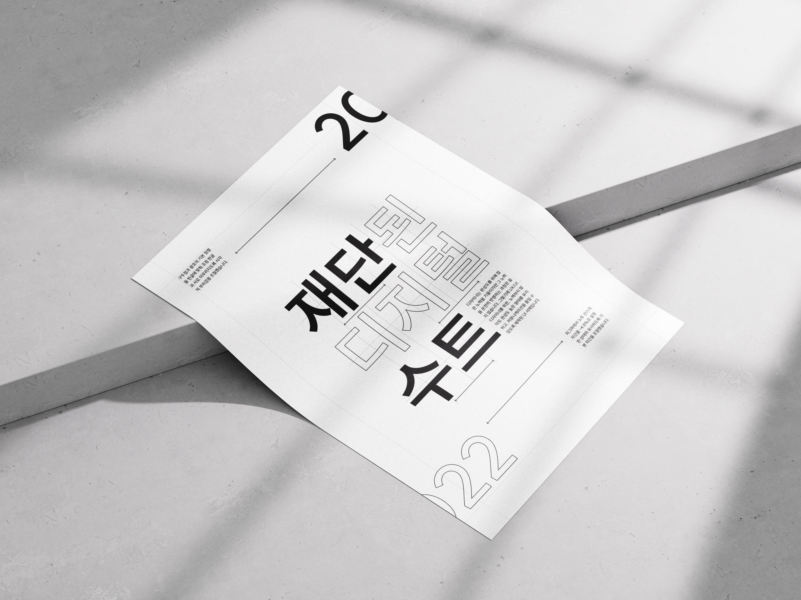

서체꼴 이야기 SUIT
한글과 영문, 숫자의 조화와 읽기 편한 글자 간격이 특징인 SUIT를 분석한 서체꼴 이야기 웹사이트입니다. 자형, 자간과 행간, 크기와 무게를 살펴보고 유사 서체와의 비교와 포스터를 통해 SUIT의 특징을 소개합니다.
A typeface exploration website analyzing SUIT, a UI sans-serif with harmonious Korean and Latin characters, numerals, and readable spacing. It examines letterforms, letter and line spacing, size, and weight, presenting SUIT’s characteristics through typeface comparisons and typographic posters.
- Type
- Website Design
- Output
- Figma
- Term
- 2026.03 - 06